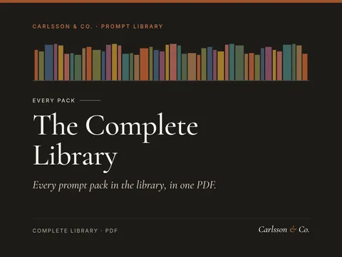
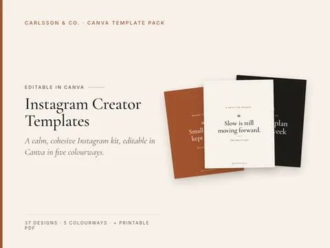
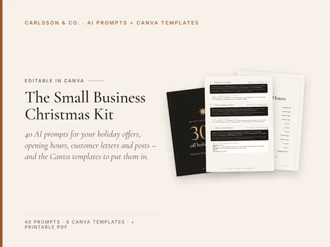
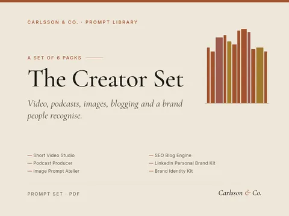

The Calm Week Planner
Plan less, finish more, without burnout.
Product finder
Describe the job in a few words. We'll suggest the packs and templates that fit.
Suggestions appear below as you type. Press the down arrow to move into them.
Try
Nothing in the shop matches that yet.
Try a shorter word, or start with one of these. If it's something we don't make, we'd like to know.
Tell us what you needA small shop in Sweden
95 carefully written prompt packs and 14 calm Canva templates. Fill in the brackets, paste into ChatGPT, Claude or Gemini, and start from something good.
Works with
The shop
Made in Sweden, written in English, used anywhere.
Find us online
Featured

All 95 packs, 1481 prompts.

A calm, cohesive Instagram kit, editable in Canva in five colourways.

40 AI prompts for your holiday offers, opening hours, customer letters and posts – and the Canva templates to put them in.

Video, podcasts, images, blogging and a brand people recognise.
Shop
95 PDFs across 9 categories, from marketing to home life.
14 calm designs you edit with a free Canva account.
8 themed bundles, for less than buying the packs one by one.
Every pack and all 1,481 prompts in one PDF.
Ten prompts to copy today, and a new one every Monday.
A few packs at a lower price. Same PDF, same prompts.
Plan less, finish more, without burnout.
Know where your money goes and what you want it to do.
Learn faster, remember longer, stress less before exams.
Itineraries, packing lists and budgets for trips that actually relax you.
Hooks, scripts and series ideas for Reels, TikTok and Shorts.
Declutter, organise and keep it that way.
The library
Each pack is a short PDF with 11 to 20 prompts, a plain-language introduction and notes on how to get the most from it. Use Preview to read a few before you buy. 95 are available now.
Find a product, build the funnel, bring the traffic.
15 prompts in three stages: finding digital products people already buy, building a sales funnel, and driving traffic to it.
Sample prompt
Score these product ideas [list] 1–10 on demand, ease of creation, price potential, differentiation and my expertise…
A month of posts planned in an afternoon.
18 prompts that turn one topic into a month of posts for Instagram, LinkedIn, TikTok and X.
Sample prompt
You are a social media strategist. My account is about [topic] for [audience]. Propose 4 content pillars, explain…
Headlines, ads and pages that sound like a person.
20 copywriting prompts for headlines, ads, landing pages and product pages, built on classic frameworks like PAS and AIDA.
Sample prompt
Here are reviews, forum posts or survey answers from [audience]: [paste]. Extract the exact phrases they use for…
Emails people actually open, from welcome to launch.
17 prompts to plan, write and improve email marketing: welcome sequences, weekly newsletters, launch campaigns and win-back emails.
Sample prompt
Suggest 10 free lead magnets for [audience] interested in [topic] that lead naturally to buying [offer]. Rate each…
Find, pitch and keep better clients.
18 prompts for freelancers and consultants: positioning, cold outreach, proposals, pricing conversations, and turning one-off jobs into retainers.
Sample prompt
I offer [services] and have experience in [industries/projects]. Suggest 5 niche positions (who + problem +…
Plan less, finish more, without burnout.
16 prompts for weekly planning, prioritisation, daily focus and honest reviews.
Sample prompt
Here is everything on my mind: [paste messy list]. Sort it into: do this week, schedule later, delegate, drop.…
Résumé, cover letter and interview prep, done properly.
18 prompts covering the whole job search: tailoring your résumé to a posting, cover letters, LinkedIn, networking messages, interview practice and salary negotiation.
Sample prompt
Analyse this job posting: [paste]. List the must-have skills, nice-to-haves, keywords, and what problem this hire…
SOPs, customer replies and planning for owners who do everything.
20 prompts for the unglamorous side of running a small business: writing standard operating procedures, customer service replies, hiring, simple planning and supplier emails.
Sample prompt
Write a step-by-step standard operating procedure for [task] at my [business]. Include purpose, who does it, tools…
From idea to a script people watch to the end.
17 prompts for YouTube creators: finding video ideas, titles and thumbnails, strong intros, full scripts, retention edits, Shorts and descriptions.
Sample prompt
My channel is about [niche] for [audience]. Give 20 video ideas with strong viewer demand, labelled search-driven…
Product descriptions that sell without shouting.
16 prompts for online sellers on Shopify, Etsy, Amazon and similar platforms: product descriptions, titles, bullet points, SEO, photos briefs and review analysis.
Sample prompt
Create a short brand voice guide for my store [store] selling [products] to [audience]: 5 tone rules, words to…
Know where your money goes and what you want it to do.
15 prompts to understand your spending, build a budget you'll keep, plan savings goals and prepare for money conversations.
Sample prompt
Here are my last month's expenses (no account details): [paste]. Categorise them, total each category, and show…
Run the week at home without running yourself ragged.
16 prompts for busy parents: weekly family planning, chore charts, school-morning routines, screen-time agreements, birthday parties and calm conversations about hard topics.
Sample prompt
Act as a family organiser. Our household: [adults and children's ages]. This week's fixed commitments: [list].…
Learn faster, remember longer, stress less before exams.
16 prompts for students in school, university or self-study: study plans, active recall, flashcards, essay outlines, exam revision and focus routines.
Sample prompt
I'm taking [courses] with exams on [dates]. I can study [hours] per week. Build a week-by-week plan that…
Lesson plans, differentiation and parent emails in a fraction of the time.
17 prompts for classroom teachers: lesson plans, differentiated tasks, rubrics, quiz questions, feedback comments, parent communication and classroom routines.
Sample prompt
Write a [minutes]-minute lesson plan for [grade] [subject] on [topic], aligned to [curriculum/standard]. Include a…
Listings, follow-ups and local content for busy estate agents.
17 prompts for real estate agents: property descriptions, listing presentations, buyer and seller follow-ups, open-house plans, neighbourhood guides and social posts.
Sample prompt
Write a listing description for a [type] in [area]: [beds/baths/size/key features]. Open with the strongest…
Menus, reviews, social posts and staff docs for food businesses.
17 prompts for restaurant, café and bar owners: menu descriptions, specials, review replies, social posts, local promotions, staff training sheets and supplier emails.
Sample prompt
Describe my venue's voice in 5 rules based on this: [type of venue, location, atmosphere, typical guest, 3 words…
Programme templates, client check-ins and marketing for coaches.
17 prompts for personal trainers and online fitness coaches: client onboarding, programme templates, check-in messages, habit coaching, content ideas and offer pages.
Sample prompt
Write an intake questionnaire for new [in-person/online] clients: goals, schedule, training history, equipment,…
Find what buyers keep complaining about, then sell the fix.
18 prompts in three stages: mining the reviews of a niche's best sellers, hunting for problems that repeat across many products, and building a small, fast product (checklist, template or mini-guide) that solves the gap, with pricing and launch prompts.
Sample prompt
I'm considering these niches: [list]. For each, describe who buys, what they're trying to get done, typical price…
A realistic training week and a shopping list to match.
15 prompts for planning your own workouts and everyday meals: weekly training schedules, home workouts, meal plans, batch cooking, shopping lists and habit tracking.
Sample prompt
I can train [days] days a week for [minutes] minutes, with [equipment]. My goal is [general…
Itineraries, packing lists and budgets for trips that actually relax you.
15 prompts for planning holidays and weekends away: destination shortlists, day-by-day itineraries, budgets, packing lists, food finds, travelling with kids and rainy-day backups.
Sample prompt
Suggest 6 destinations for a [days]-day trip in [month] from [home city] for [travellers] who like [interests],…
Prompts that make an AI assistant a sharper pair programmer.
18 prompts for software developers: planning features, writing and refactoring code, debugging, tests, code review, documentation, SQL and learning new stacks.
Sample prompt
I need to build [feature] in [stack]. Break it into small, testable tasks in order, list unknowns I should resolve…
Formulas, dashboards and clean data without the headache.
18 prompts for Excel and Google Sheets users: writing and explaining formulas, cleaning messy data, pivot tables, charts, dashboards, templates and simple automations.
Sample prompt
In [Excel/Google Sheets], my data has columns [headers]. Write a formula that [goal]. Explain how it works and how…
Get the picture in your head out of Midjourney, DALL-E and friends.
15 prompts for AI image generators like Midjourney, DALL-E, Stable Diffusion and Ideogram: a prompt-building formula, styles, lighting, product shots, social graphics, consistent characters and editing.
Sample prompt
Turn this idea into 3 detailed image prompts for [tool]: [idea]. Structure each as subject, action, setting,…
Hooks, scripts and series ideas for Reels, TikTok and Shorts.
17 prompts for short vertical video: hooks, 30-second scripts, series formats, on-screen text, b-roll lists, captions, trend adaptation and performance reviews.
Sample prompt
Suggest 8 repeatable series formats for a [niche] account aimed at [audience] (e.g. 'one tool a day', 'myth vs…
Plan, record and promote a show people finish listening to.
16 prompts for podcasters: show concept, episode planning, guest research and outreach, interview questions, show notes, titles, clips and promotion.
Sample prompt
Help me define a podcast about [topic] for [audience]: a one-sentence promise, format, episode length, frequency…
Be known for something specific, without cringe.
17 prompts for building a personal brand on LinkedIn: positioning, profile rewrite, content pillars, post formats, comments, DMs and a weekly routine.
Sample prompt
Help me define my positioning: I help [audience] with [problem] using [experience]. Ask me 5 questions, then write…
Discovery, demos, objections and follow-ups that feel like conversations.
18 prompts for sales calls: research, call agendas, discovery questions, demo flow, objection handling, follow-up emails, proposals and pipeline reviews.
Sample prompt
From this public info about [company] [paste], summarise what they do, likely priorities, possible pain points our…
Faster, kinder replies and a help centre that answers itself.
16 prompts for customer support: reply templates, tone adjustment, difficult customers, refunds and delays, help-centre articles, FAQ building, macros and ticket analysis.
Sample prompt
Write a reply to this customer message [paste] based on our policy [policy]. Acknowledge the issue, give a clear…
Job ads, interviews and onboarding for small teams.
20 prompts for hiring and HR admin: role definitions, inclusive job ads, screening, structured interviews, scorecards, reference checks, offer and rejection emails, onboarding plans and policy drafts.
Sample prompt
Help me define the role of [title] for [team]: purpose, 4–6 outcomes for the first year, must-have skills and…
Scope, deliver and report like a much bigger firm.
18 prompts for independent consultants and advisers: discovery, scoping, proposals, workshop design, frameworks, stakeholder interviews, reports, executive summaries and client updates.
Sample prompt
Turn this client brief [paste] into a crisp problem statement, key questions to answer, and what's in and out of…
Session plans, client tools and a practice that runs smoothly.
16 prompts for life, career and business coaches: discovery sessions, coaching agreements, session plans, powerful questions, worksheets, between-session check-ins, content and offers.
Sample prompt
Write a 30-minute discovery session flow for a [niche] coach to understand a prospect's goals and explain how…
Listings, photos and shop polish for handmade and digital sellers.
18 prompts for Etsy sellers: niche and product ideas, titles, tags, descriptions, photos, shop sections, about page, customer messages, reviews and seasonal planning.
Sample prompt
Suggest 15 product ideas for an Etsy shop selling [category] to [buyer], noting which could be digital downloads…
Listings, A+ content and review insights for marketplace sellers.
18 prompts for Amazon and marketplace sellers: product research questions, titles, bullets, A+ content, backend keywords, image briefs, review analysis, customer questions and launch checklists.
Sample prompt
I'm evaluating [product idea]. List the questions I should answer about demand, competition, margin, fees,…
Articles that rank because they actually answer the question.
19 prompts for SEO blogging: keyword clustering, search intent, briefs, outlines, original drafts, on-page optimisation, internal links, refreshing old posts and content calendars.
Sample prompt
Group these keywords [list] into topic clusters, name a pillar page for each, and note the search intent of each…
From premise to finished draft, with you holding the pen.
19 prompts for fiction writers: premises, characters, worldbuilding, plotting, scene craft, dialogue, revision and query letters.
Sample prompt
Here's my premise: [premise]. What's the central conflict, what's at stake, and what's the question readers will…
Personalised, gentle stories your kids ask for again.
15 prompts for parents, grandparents and teachers creating children's stories: personalised bedtime stories, story series, stories that help with new situations, rhyming tales, interactive stories and illustration prompts.
Sample prompt
Write a calm 5-minute bedtime story for a [age]-year-old named [nickname] who loves [interests]. Gentle adventure,…
Timelines, budgets and speeches for the big day and every party after.
15 prompts for planning weddings, milestone birthdays, anniversaries and other events: budgets, timelines, guest lists, vendor emails, run-of-show, speeches, signage and thank-yous.
Sample prompt
Create a planning timeline for a [event] on [date] with [guests] guests, working backwards month by month, with a…
Declutter, organise and keep it that way.
15 prompts for home organisation: room-by-room decluttering plans, cleaning schedules, storage ideas, moving checklists, paperwork systems and family routines that keep the house in order.
Sample prompt
Create a 30-day declutter plan for a [home size] with [household], 15–20 minutes a day, room by…
Practise speaking, build vocabulary and actually remember it.
15 prompts for language learners: conversation practice, role-plays, vocabulary building, grammar explanations, writing correction, listening practice and study routines, for any language and level.
Sample prompt
Be my [language] conversation partner at [level]. Talk about [topic], use simple sentences, ask me one question at…
Talks, presentations and toasts that people remember.
15 prompts for public speaking: finding your message, structuring talks, openings and closings, stories, slides, rehearsal, Q&A prep, nerves and feedback.
Sample prompt
Help me find the one-sentence message of my talk on [topic] for [audience]. Ask me 5 questions, then propose 3…
Prepare like a pro for salary, suppliers, clients and everyday deals.
15 prompts for negotiation preparation: goals and walk-away points, understanding the other side, anchoring, scripts, role-play, handling tactics, and follow-up emails.
Sample prompt
Help me prepare for negotiating [what] with [who]. Define my goal, ideal outcome, acceptable range, walk-away…
A clear story for investors, partners and grant panels.
20 prompts for startup founders: problem and solution framing, market sizing logic, business model, slide-by-slide deck, one-pager, investor emails, Q&A prep and pitch rehearsal.
Sample prompt
Write 10 one-line descriptions of [startup] in the format '[product] helps [customer] [do something] by…
Appeals, grants, volunteers and impact reports for small charities.
18 prompts for nonprofits, charities and community groups: mission clarity, fundraising appeals, grant application drafts, donor thank-yous, volunteer recruitment, impact reports, social posts and board papers.
Sample prompt
Help us sharpen our mission [mission] into a one-line statement and a 50-word impact…
Enquiries, shoot prep and marketing for working photographers.
19 prompts for photographers: enquiry replies, packages and pricing pages, client questionnaires, shot lists, shoot-day guides, delivery emails, portfolio captions, blog posts and referral requests.
Sample prompt
Write a warm reply to this enquiry [paste] for my [type] photography, answering their question, sharing…
The paperwork side of private practice, handled.
19 prompts for counsellors, therapists and psychologists running a private practice: website copy, intake paperwork templates, scheduling and cancellation messages, policies, newsletters, referral networking and business planning.
Sample prompt
Write a warm, professional About page for my practice: my approach [approach], who I work with [populations], what…
Client comms, marketing and office ops for small legal practices.
20 prompts for solicitors, attorneys and small law firms: website and profile copy, client onboarding emails, engagement letter structure, status updates, billing communications, internal procedures, marketing and business development.
Sample prompt
Write a website page for our [practice area] work for [client type]: who we help, how we work, what to expect in a…
Guided journaling to untangle your thoughts and plan your days.
15 prompts for reflective journaling: morning pages, evening reviews, untangling worries, decisions, gratitude, values, weekly and monthly reviews.
Sample prompt
Ask me 4 short morning questions about how I feel, what matters today, what might get in the way and one thing…
Shorter meetings, clearer notes, actions that actually happen.
15 prompts for meetings: agendas, facilitation, transcript summaries, action lists, decision logs, status updates, async alternatives and recurring meeting reviews.
Sample prompt
Here's what I need: [goal]. Should it be a meeting, an email, a doc or a quick call? Explain and draft the…
Read faster, summarise accurately and think more critically.
15 prompts for research and reading: scoping questions, search strategies, summarising articles and reports, comparing sources, extracting data, critical evaluation, literature tables and briefing notes.
Sample prompt
Help me turn this broad interest [topic] into 3 focused research questions, with what kind of evidence would…
Find out what customers really want before you build or market.
19 prompts for customer research: personas from real data, interview guides, surveys, analysing feedback, jobs-to-be-done, messaging tests and turning insights into copy.
Sample prompt
Help me plan a 2-week customer research sprint for [product] to answer [questions]: methods, who to talk to,…
Hand repetitive work to Zapier, Make and simple scripts.
17 prompts for automating repetitive work with no-code tools like Zapier, Make, n8n, Google Apps Script and built-in email rules: finding automation opportunities, designing workflows, writing formulas and small scripts, testing and documenting.
Sample prompt
Here's a list of my repetitive weekly tasks [list with time spent]. Which can be automated, with which tools, and…
Name it, position it and give it a voice people recognise.
19 prompts for building a small brand: positioning, naming, taglines, brand story, voice and tone guide, visual direction briefs, messaging hierarchy and brand consistency checks.
Sample prompt
Ask me 10 questions about my business [business], then write brand foundations: purpose, audience, promise,…
Clear the tabs, files and apps without a weekend lost.
14 prompts for a calmer digital life: inbox and desktop resets, file systems, tab and app audits, password hygiene, notification rules and a weekly maintenance habit.
Sample prompt
My desktop and Downloads folder are full of [types of files]. Design a 45-minute reset: what to delete, where to…
A calmer move from first box to first night.
13 prompts for planning a house move: timelines, budgets, room packing orders, change-of-address lists, utility setup, first-night kits and settling-in routines.
Sample prompt
We move on [date] from [old place] to [new place] with [household]. Build a week-by-week timeline from 8 weeks out…
Routines, vet visits and pet-sitter notes, sorted.
14 prompts for everyday pet organisation: daily and weekly care routines, feeding logs, vet visit prep, travel and boarding notes, pet-sitter briefs and lost-pet plans.
Sample prompt
Create a simple daily care card for my [species/breed], age [age], covering feeding, walks or play, meds reminders…
Pick one idea, ship a tiny version, keep momentum.
14 prompts for starting a side project beside a day job: choosing one idea, defining a tiny first version, weekly shipping plans, user feedback, naming, a simple landing page and protecting your energy.
Sample prompt
Here are ideas I have been carrying: [list]. Ask me 5 questions, then help me rank them by excitement, skill fit,…
Kind, clear words for work and life when you need to say no.
14 prompts for setting boundaries at work and in life: declining requests, protecting focus time, ending conversations, negotiating workload, and following up calmly.
Sample prompt
Write 5 polite ways to decline [request] from [colleague/manager/client] while offering [alternative: later date,…
Gifts, hosting and a budget for a calmer December.
14 prompts for a calmer holiday season: a realistic calendar, a gift list and budget, hosting menus and timelines, travel and family logistics, cards and thank-you notes, and a gentle January reset.
Sample prompt
Help me plan the holiday season from [start date] to [end date] for a household of [who]. Fixed events are [list].…
Your first months leading people, one calm conversation at a time.
14 prompts for new managers and team leads: a first 90-day plan, one-to-ones, clear expectations, delegation, feedback, difficult conversations, team meetings and looking after yourself in the role.
Sample prompt
I have just become manager of a team of [number] [roles] at [type of organisation]. Draft a 30-60-90 day plan…
Steady help for looking after someone you love.
12 prompts for family caregivers: organising appointments and medications, preparing for doctor visits, sharing updates with relatives, splitting tasks fairly, handling paperwork questions and protecting your own rest.
Sample prompt
I am caring for my [relationship] who [general situation]. Help me build a one-page care overview: daily routine,…
Balconies, patios and windowsills that actually grow.
12 prompts for gardening in small spaces: reading your light and space, choosing plants and containers, a seasonal planting calendar, watering and feeding routines, growing herbs and vegetables, and fixing common problems.
Sample prompt
My growing space is a [balcony/patio/windowsill/small yard] of about [size], facing [direction], in [climate or…
Set prices you can explain, and raise them without dread.
12 prompts for setting and adjusting prices for products and services: working out true costs, understanding value, comparing competitors, building good-better-best tiers, writing a price page, handling discounts and raising prices with clear notice.
Sample prompt
I sell [product or service]. Help me list every cost involved, including my time at [hourly value], materials,…
Calm, organised steps from first budget to moving day.
14 prompts for first-time buyers of a flat or house: realistic budgets and deposits, questions for a lender or mortgage adviser, must-have lists, comparing areas, viewing checklists, side-by-side property comparisons, offers and follow-ups, survey findings, documents and deadlines, and a moving-in plan.
Sample prompt
My household take-home income is [monthly amount] and our regular outgoings are [list of costs]. Help me lay out a…
Polite, firm letters that get problems sorted.
12 prompts for everyday consumer complaints and claims: first complaints, refunds, repairs and replacements, faulty products and warranties, cancelling subscriptions and contracts, disputing bills and charges, travel delays and compensation, late or missing deliveries, poor service, follow-ups, escalation and keeping a record of your case.
Sample prompt
I bought [product or service] from [company] on [date] and the problem is [what went wrong]. Write a short, polite…
A simple yearly plan that keeps small jobs from becoming big ones.
12 prompts for looking after a home without stress: a home inventory, a seasonal maintenance calendar, a monthly 20-minute checklist, winter and summer preparation, diagnosing problems safely, deciding between DIY and hiring, job briefs and quote comparisons, a yearly maintenance budget, landlord repair requests and a home logbook.
Sample prompt
Help me build a home inventory for my [type of home, rough age and whether I own or rent]. Create a table of…
Walk into your review knowing what you achieved and what you want next.
12 prompts for preparing your own yearly or mid-year performance review: gathering evidence of your work, keeping a running wins log, turning tasks into outcomes, writing self-assessment answers, handling a missed goal honestly, asking colleagues for feedback, preparing for the conversation, responding calmly to criticism, setting next year's goals, raising development, promotion or pay, and writing a follow-up email.
Sample prompt
Help me rebuild my year at work as a [job title] from [start month] to [end month]. Give me a checklist of places…
Turn what you know into a clear, finished course.
14 prompts for planning, writing and launching a small online course or paid workshop: choosing and validating a topic with real people, defining the learner and outcome, module and lesson outlines, lesson scripts, exercises and worksheets, short quizzes, recording and slides, welcome emails and onboarding, honest pricing and a simple sales page, a pilot round, feedback and improving after the first cohort.
Sample prompt
I have experience in [your field or skills] and I am often asked about [common questions people ask you]. Help me…
Openings that earn the next minute, and edits that keep it.
16 prompts for YouTube hooks and audience retention on long-form videos: diagnosing weak hooks, openings that match the title promise, open loops, missions with stakes and payoffs, re-hooks, cutting slow setup, pacing and pattern interrupts, a CapCut edit pass, reading the retention graph and a reusable checklist.
Sample prompt
Here is my video title, [title], and the first 30 seconds of my script: [opening lines]. Show me where a viewer is…
Packaging that is honest, clear and worth testing.
14 prompts for YouTube titles and thumbnails as one package: finding the promise of a video, title angles with a delivery check, pairing title and thumbnail, thumbnail briefs for Canva or CapCut, clickbait checks, test variants, a simple test log, reading results calmly, comparing AI titles with your own and reviewing past videos for patterns.
Sample prompt
Here is a summary of my video: [summary or rough script]. Help me write the one-sentence promise of this video…
Careful true crime and history videos, researched and told without showing your face.
16 prompts for running a faceless narrated storytelling channel on YouTube: channel concept and tone, careful case selection, research logs and timelines, separating fact from claim, ethical script review, calm narrated scripts, respectful visuals, CapCut edit plans, titles and thumbnails, source credits and a weekly production routine.
Sample prompt
Help me shape a faceless storytelling channel about [true crime, unsolved cases, local history or eerie true…
Find a new direction slowly, test it gently, and move when it feels right.
14 prompts for changing direction in mid-career: noticing what is not working and what to keep, mapping transferable skills and values, generating and shortlisting directions, researching a field, informational conversations, small low-risk experiments, a simple money and timing plan, talking it through with family and your manager, a 90-day transition plan and handling doubt.
Sample prompt
Here is an honest description of my current work and how I feel about it: [notes on your role, days, people and…
Warm, sincere words for the moments that matter, when you cannot find them yourself.
12 prompts for writing personal messages and cards: thank-you notes for gifts and help, condolence and sympathy messages, words for someone who is ill or struggling, congratulations on babies, weddings, new jobs and graduations, birthday and milestone messages, sincere apologies, short toasts, farewell notes to colleagues, reconnecting with old friends and letters of gratitude.
Sample prompt
[Name] gave me [gift] for [occasion]. Our relationship is [how we know each other] and I plan to [how I will use…
Help the people nearby find you, trust you and come back.
14 prompts for small local businesses that want to be found and chosen nearby: profile descriptions for maps and listings, categories and services, consistent details across listings, a simple local landing page, regular updates and offers, flyers and noticeboard posters, asking for and replying to reviews, partnerships with neighbouring businesses, open days and a monthly visibility routine.
Sample prompt
Write a clear business description of around 700 characters for my map and local listings. I run [type of…
Plan, price and run a stall that feels calm on the day.
12 prompts for selling in person at markets, craft fairs and pop-ups: choosing events, stall applications, stock and pricing, layout and display, signage, packing, talking to visitors, quiet and busy spells, card payments, sales records, follow-ups and post-event reviews.
Sample prompt
I make [products] and sell them at around [price range]. Here are the markets and fairs I am considering, with…
Keep a club, team or group running smoothly without doing it all yourself.
12 prompts for running a volunteer-led club, society, team or hobby group: welcoming new members, season and term schedules, volunteer roles and asking for help, meeting and AGM agendas, minutes and action lists, members' updates, fee and subscription reminders, a simple budget and expenses record, calm handling of disagreements, social events, house rules and a handover note.
Sample prompt
Write a friendly welcome message for a new member joining [club name], a [type of group] that meets [when and…
Shape the years after work at your own pace, with purpose and a little structure.
13 prompts for moving from work into retirement or semi-retirement: reflecting on what work gave you, imagining an ordinary good week, a simple shape for the days, staying connected, purpose through volunteering, learning or part-time work, health routines, organising money questions and paperwork, talking with a partner, handing over at work, a first-year plan and handling flat days.
Sample prompt
I am leaving my role as [job or field] after [number] years. Ask me eight gentle questions, one at a time, about…
Gentle organisation for the first months with a new baby.
12 prompts for expecting and new parents: a calm pre-birth checklist, packing a birth bag, a freezer and meal plan, sharing night feeds and chores, a flexible daily rhythm, questions for appointments, asking for help, a visitor plan with kind boundaries, announcing the birth, thank-you notes, tracking paperwork and leave dates, and small ways to look after yourselves.
Sample prompt
Our baby is due on [due date] and we live in [type of home and space]. Make a calm checklist of what to get ready…
A steadier, quieter working day from home, without the drift.
12 prompts for working from home well: a realistic daily routine, a workspace in a small home, weekly planning and focus time, clear async updates, shorter video calls, staying visible to a manager, response-time agreements, staying connected to colleagues, sharing a home during work hours, a shutdown ritual and a monthly review.
Sample prompt
I work from home as [job or type of work] and my fixed commitments are [school run, regular calls, other fixed…
Calm, clear organisation for people who let one or two homes.
13 prompts for private landlords with one or a few rented homes: honest listings, fair viewings, welcome packs, inventories, maintenance and safety calendars, repair and access messages, late-rent conversations, tidy records, renewals, move-outs, deposit letters and a yearly review.
Sample prompt
Write a clear, honest rental listing for my [property type] in [area]. Key details are [rooms, rent, bills…
More thoughtful reading, and better conversations about it.
11 prompts for reading more deliberately and running or joining a book club: a reading list built from your tastes and moods, a realistic monthly reading plan, choosing books for a group, spoiler-free discussion questions, a ninety-minute meeting structure, drawing in quieter members, invitations and reminders, a reading journal, chapter notes, comparing books with their adaptations and a yearly reading review.
Sample prompt
Here are five books I loved, [titles], and two I could not finish, [titles]. Suggest ten books I might enjoy,…
Clean, honest product photos with the phone you already have.
16 prompts for taking product photos at home with a smartphone: shot lists per product, window-light setup, a household backdrop and props kit, brand styling without clutter, consistent catalogue framing, phone settings and steady shooting, tricky items, lifestyle and flat-lay ideas, calm editing with free apps, marketplace image requirements and naming, batch shooting days and pre-upload checks.
Sample prompt
I sell [product] made from [materials] in [sizes or variations]. Create a shot list for one listing covering a…
Get your products into independent shops, one calm conversation at a time.
17 prompts for makers and small brands selling to independent shops: deciding whether wholesale suits you, wholesale and retail pricing, minimum orders and terms, line sheets, stockist shortlists, pitch and follow-up emails, trade fairs and shop visits, samples, order forms, packing notes, invoicing and payment reminders, stockist support, reordering nudges and a simple tracker.
Sample prompt
I make [products] and currently sell through [current channels]. I can produce about [quantity] per [week or…
A calm system for the bills, renewals and paperwork of everyday life.
15 prompts for getting on top of personal and household life admin: a brain dump and triage, a gentle way back in, an admin hour routine, a renewals and deadlines calendar, a subscriptions review, warranties and receipts, tax and benefit paperwork planning, letters to cancel, query or switch, preparing for calls, a filing system, an important documents and contacts list, and sharing admin fairly at home.
Sample prompt
Here is everything on my mind that needs sorting: [list of admin tasks, letters, bills and worries]. Sort it into…
A patient companion for learning, or returning to, a musical instrument.
15 prompts for adults learning or coming back to a musical instrument: realistic goals and choosing pieces, a daily practice plan for a busy week, warm-ups and technique, breaking down hard passages, slow practice and tempo ladders, music theory in plain language, ear training and learning songs from recordings, a practice log, plateaus and low motivation, preparing for lessons, playing for others and handling nerves, and playing with other people.
Sample prompt
I play [instrument] at about [level, or years played and how long ago]. I can practise around [minutes per day,…
Small, sensible steps to use less energy and understand your bills.
15 prompts for using less energy at home: reading an energy bill, tracking meter readings, a room-by-room walk-through, heating and cooling habits, hot water and laundry, kitchen and appliances, standby and electronics, draughts and low-cost fixes, a household agreement, a seasonal checklist, comparing tariffs and questions for landlords, installers and advisers.
Sample prompt
Here is the text from my latest energy bill: [paste bill text, with account numbers removed]. Explain each section…
Buy a sensible second-hand car with a clear head and a short list of good questions.
14 prompts for buying a used car from a dealer or a private seller: working out what you need, a realistic total budget, comparing running costs, reading adverts, questions before viewing, checking paperwork and service history, a viewing and test-drive checklist, inspection questions, dealer and private sale protections, polite negotiation, walking away, handover and payment, and the first month of ownership.
Sample prompt
Help me work out what I need from a car. I drive about [weekly mileage], mostly [town, motorway or rural roads],…
Warm, well-paced words for the moments when you are asked to stand up and say something.
14 prompts for writing and delivering short speeches: gathering stories, finding one clear thread, wedding speeches, milestone toasts, leaving and retirement speeches, gentle words at a memorial, thank-you and welcome speeches, kind humour, cutting to time, speaking notes, rehearsal and nerves.
Sample prompt
I am giving a speech about [person or occasion] and I know them as [relationship]. Ask me 12 short questions, one…
A steady plan for starting life in a new country, one list at a time.
15 prompts for planning and settling into a move abroad: a readiness check, city and neighbourhood research, a move timeline, a visa paperwork checklist, a document folder, a moving budget, what to ship, sell or store, renting from a distance, arrival tasks, healthcare and schools, everyday phrases, friendships and routine, and staying close to home.
Sample prompt
I am thinking about moving from [current country] to [destination country] for [reason: work, study, a partner or…
Plan, fill and run small in-person workshops that people remember fondly.
16 prompts for hosting small paid in-person workshops and classes: shaping an idea and outcome, format and group size, pricing per seat, finding and questioning venues, a minute-by-minute session plan, kit lists, event listings, booking and reminder emails, a welcome script, mixed skill levels, keeping to time, feedback forms, follow-up emails and a simple bookings and costs tracker.
Sample prompt
I want to run a workshop on [craft or subject] for [type of guest]. Help me shape the idea into one clear promise…
Clear, friendly instructions that let other people make what you make.
15 prompts for makers writing craft patterns and step-by-step tutorials: skill level and audience, materials and tools lists, introductions and finished-size notes, abbreviations and glossaries, numbered steps, sizing and grading notes, photo and diagram planning, tester calls and feedback forms, revising from feedback, troubleshooting and FAQs, errata notes, style sheets, pattern shop listings and plain-language licence notes.
Sample prompt
I am writing a [craft] pattern for [project]. It uses these techniques: [list techniques]. Help me choose a fair…
Plan a renovation calmly, from the first idea to the last snag list.
15 prompts for planning and managing a home renovation or single-room refurbishment: defining the scope, a realistic budget with a contingency, deciding what to do yourself, briefing tradespeople, getting and comparing quotes, checking references, timelines and order of works, living through the works, tracking spending, handling changes, snag lists and keeping a home file.
Sample prompt
I want to renovate my [room or area] in a [type and age of home]. Here is what bothers me now and what I hope for:…
Take on custom work with clear terms, kind boundaries and happy clients.
15 prompts for illustrators, painters, portrait artists, calligraphers and makers who take custom work: deciding what you offer, a commission menu with price tiers, enquiry forms, warm replies, clear quotes, plain-language terms, creative briefs, sketch feedback, extra revision requests, polite chasers, waiting lists, delivery notes, testimonials and turning work down gracefully.
Sample prompt
I am a [type of artist] who works in [medium and style]. Help me decide which commissions I want to take on and…
Gather the recipes and stories your family cooks by heart, and keep them for good.
14 prompts for collecting, testing and writing up family recipes: planning the book and who to ask, a list of dishes to collect, gentle interview questions, turning vague instructions into measurable quantities, a consistent recipe layout, unit conversions and servings, test-cooking notes, headnotes and stories, chapter organisation, allergy and dietary adaptations, an introduction and dedication, and a checklist for printing or sharing.
Sample prompt
I want to make a family recipe book as a [keepsake or gift] for [who it is for], ready by [date or occasion]. Help…
Arrive at medical appointments organised, and leave knowing what happens next.
14 prompts for preparing for and following up on health appointments: what you want from the visit, a symptom diary and timeline, medicines and allergies, key questions, a short summary for when time is tight, questions about tests and next steps, plain-language explanations of terms, notes and follow-up tasks, polite requests for records or referrals, telehealth calls and a calm paperwork folder.
Sample prompt
I have a [type of appointment] with [doctor, dentist or other professional] on [date] about [main concern]. Help…
Welcome new clients so smoothly that the work starts on a calm footing.
16 prompts for welcoming new clients with care and clarity: mapping your onboarding steps, welcome emails and guides, intake questionnaires, kickoff calls and summaries, scope and revision expectations, collecting files and access safely, timelines, first invoices, early check-ins and feedback, and a reusable checklist.
Sample prompt
I am a [type of business] and I work with [type of client]. Map every step from the moment a client says yes to…
Everything above, in one PDF.
1481 prompts for $99 instead of $1349 bought separately.
No packs match that search. Try a broader word, or browse by category.
Calm, printable designs you edit in Canva with a free account: planners, budget sheets, cards, CV layouts and a full Instagram kit. Each one comes with a printable PDF too.
A calm, cohesive Instagram kit, editable in Canva in five colourways.
A calm, cohesive Instagram kit you edit in Canva: 20 feed posts, 10 stories, 5 highlight covers, a content calendar and a media kit, in five colourways (Cream, Sand, Ink, Rust and Stone).
A quiet weekly planner you can edit in Canva and print at home.
A quiet, printable weekly planner you can edit in Canva.
Itinerary, packing list and travel budget in one calm, editable set.
Itinerary, packing list and travel budget in one calm set you can edit in Canva.
Simple budget sheets that show where your money goes.
Simple budget sheets that show where your money goes, so you can choose where it goes next.
Eight elegant, quiet cards to personalise in Canva and print at home.
Eight elegant, quiet cards you can personalise in Canva and print at home.
Fill-in savings challenges and a debt payoff tracker that show steady progress.
Fill-in savings challenges and a debt payoff tracker that make steady progress visible.
Three clean, photo-free CV layouts and a matching cover letter.
Three clean, photo-free CV layouts and a matching cover letter, quick to edit in Canva.
Cleaning, meals and chores, shared fairly and kept simple.
Cleaning, meals and chores, shared fairly and kept simple.
Quiet, elegant invitations, season's cards, gift tags and place cards.
Quiet, elegant invitations, Christmas cards, gift tags and place cards for gatherings big and small.
A habit tracker, gratitude pages and an easy morning and evening routine.
A habit tracker, gratitude pages and an easy morning and evening routine, ready to print or use digitally.
Calm video covers, text overlays and photo-mode slides for TikTok and Reels.
A calm, faceless-friendly kit for short video, editable in Canva: 12 video covers, 8 text overlays and 6 photo-mode caption slides, all at 1080×1920, in five colourways (Cream, Sand, Ink, Rust and Stone).
Launch, sale and restock posts, stories and email headers for a small online shop.
Everything a small online shop needs to announce a launch, run a sale or say thank you, editable in Canva in five calm colourways.
Christmas cards, invitations, a St. Lucia program, gift tags and wish lists – plus prompts for your Christmas greetings.
A calm, cohesive Christmas kit with a Scandinavian feel that you edit in Canva.
40 AI prompts for your holiday offers, opening hours, customer letters and posts – and the Canva templates to put them in.
For small business owners who want to get through the holidays without writing every post from scratch.
Sets
Grouped by the kind of work you do, for less than buying them one by one.
5 packs · 88 prompts
Everything for getting seen and getting sales.
$39Separately $101
3 packs · 49 prompts
For the job hunt, the work week and the money.
$25Separately $28
4 packs · 71 prompts
Find a gap, launch an offer, win clients, run the back office.
$55Separately $99
6 packs · 103 prompts
Video, podcasts, images, blogging and a brand people recognise.
$69Separately $102
5 packs · 89 prompts
Research, listings and customer insight for online sellers.
$59Separately $94
7 packs · 106 prompts
Calmer weeks at home, from meals to holidays.
$39Separately $60
6 packs · 109 prompts
Client communication and admin for independent practitioners.
$79Separately $129
4 packs · 68 prompts
Code, spreadsheets, research and automation.
$55Separately $77
The complete set
All 95 packs, 1481 prompts in a single PDF.
How it works
Pick the area you're working on this week. Each pack stands on its own.
Delivered by Gumroad after checkout. Keep it, and fill in the brackets with your own work.
The prompts work in ChatGPT, Claude, Gemini and other chat assistants.
By the numbers
Guides
Articles with prompts you can use today. All guides
Five practical prompts for tailoring your CV to a job ad, rewriting bullet points around results, and checking it like a recruiter would.
GuideA step-by-step way to use ChatGPT or Claude to choose content pillars, build a 30-day calendar and write posts that still sound like you.
GuideWhat to put in the first five emails a new subscriber receives, and prompts to draft each one with an AI assistant.
GuideA simple structure for product descriptions that lead with the outcome, plus prompts for writing, reviewing and improving your listings.
GuideUse an AI assistant to sort your spending, build a realistic budget and plan a savings goal, without sharing sensitive financial details.
GuidePrompts for writing a tight agenda, turning messy meeting notes into decisions and action items, and sending a follow-up people actually read.
Questions
A PDF for each pack, with written prompts, a short introduction and notes on how to use them. You download it straight after purchase.
Any chat assistant, such as ChatGPT, Claude or Gemini. Free versions work; you just paste the prompt and fill in the brackets.
No one can promise that, and we won't. The prompts save you time and give you a better starting point. The results depend on your product, your audience and the work you put in.
No. The budgeting, fitness, journaling, therapist-admin and law-office packs help you organise, plan and write. They are not financial, medical, psychological or legal advice. For those decisions, talk to a qualified professional.
Use them as much as you like in your own work and your clients' work. Please don't resell or redistribute the PDFs.
Email carlsson.co@mail.grokbot.com. If something is unclear, a prompt or template link doesn't work, or you have an idea for a pack, I'd like to hear it.